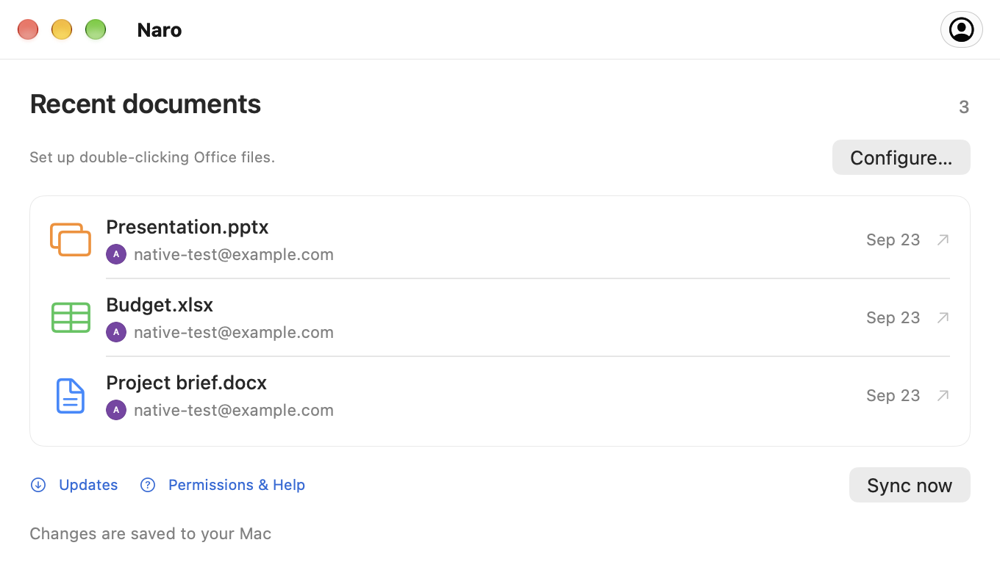
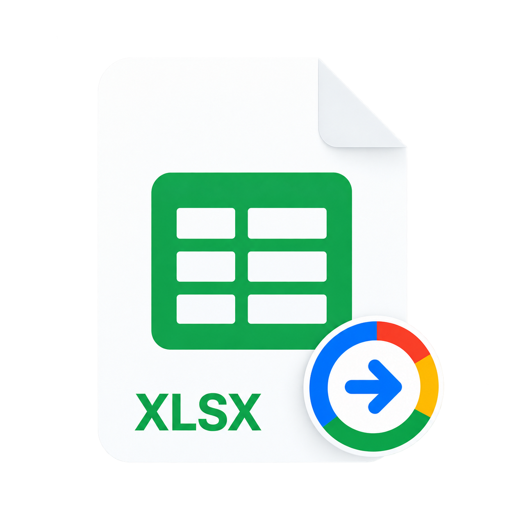
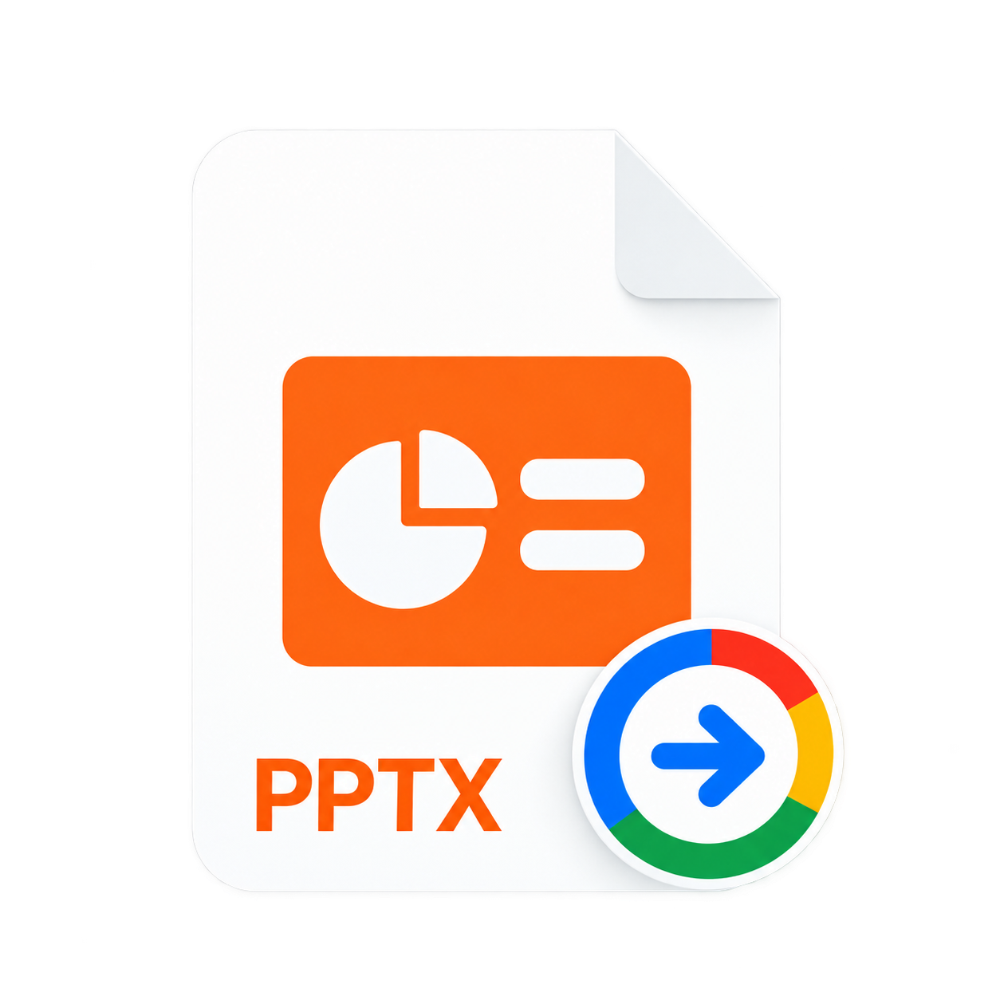

Connect your Google account.
Sign in through your browser, then make Naro the default app for your Office files in its account settings.
Office files, connected on macOS
Naro is a macOS app that opens your Word, Excel, and PowerPoint files in Google Docs, Sheets, and Slides, then syncs saved changes back to your Mac while the app is running and online.
Available for Apple Silicon · macOS 26 or newer
Less app. More flow.
Your recent files. Your Google accounts. A familiar place to pick up where you left off.
A closer look
A familiar beginning
Your usual double-click, with Google’s editors on the other side.
Sign in through your browser, then make Naro the default app for your Office files in its account settings.
Naro uploads the file to your Google Drive and opens the matching editor. With multiple accounts, choose an avatar first.
While Naro is running and online, it checks Google’s saved changes and writes them back locally, keeping a backup.
Three editors. One app.
Documents, spreadsheets, and presentations. Up to 100 MB per file.

From a local document to Google Docs.
DOC · DOCX
Open your spreadsheets in Google Sheets.
XLS · XLSX
Take your presentations into Google Slides.
PPT · PPTXConnect the Google account you want to use for your documents. Naro uses your name, email, and profile picture to show connected accounts and help you choose the right one. Naro never receives your Google password.
When you open a local Office file with Naro, it uploads that file to your Google Drive and opens Google’s editor in your browser. Drive access lets Naro retrieve saved changes and sync them back to your Mac. Access is limited to files created by Naro or explicitly shared with it, not your entire Drive.
Documents travel directly between your Mac and Google. Naro has no developer-operated server that receives your documents. Sign-in tokens stay in macOS Keychain.
A little help along the way
Short guides for your first file,
your next account, and everything in sync.
Getting started
Connect Google, set up opening from Finder, and take your first document into the browser.
Google accounts
Add another account and choose where each document goes with Naro’s compact avatar picker.
Saving & sync
Understand local saving, backups, and what to do when a file changes in two places.
Good to know
Yes. Download Naro from GitHub Releases, or install it with Homebrew:
brew install --cask plexideas/tap/naro. The download has no Apple Developer ID signature, so macOS may require you to explicitly allow the first launch.
Editing happens in Google Docs, Sheets, or Slides in your browser. Naro handles opening files from Finder, choosing an account, and bringing Google’s saved changes back to your Mac.
Naro keeps both versions and asks which one to continue with. It also makes local backups before replacing a document. Keep Naro running and connected to the internet for synchronization.
Compatibility depends on Google’s Office editors. Complex formatting, macros, and other advanced features may not be preserved. If Google upgrades an older DOC, XLS, or PPT file, Naro saves a modern-format copy alongside the original. Converting a file into a separate Google-native document is not tracked by the original file link.
Naro supports Apple Silicon Macs running macOS 26 or newer. The app can check GitHub Releases for updates. You choose when to download, install, and restart from the update window.